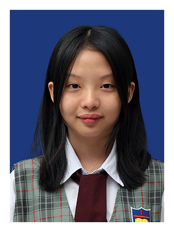

Biotechnology • Formulation Science • Sustainable Innovation
Passionate about turning curiosity into hands-on projects and exploring how everyday materials can become useful, sustainable solutions.

I am a high school student highly passionate about biotechnology, formulation science, and sustainable innovation. I enjoy turning curiosity into hands-on projects and exploring how everyday materials can become useful solutions. I consider myself curious, creative, and always eager to learn from new experiences and perspectives.
Hands-on applications of biotechnology and sustainable materials to solve modern problems.
Probiotic skincare gel mask formulated and developed entirely from Kombucha Bacterial Cellulose.
Flexible: KBC + chitosan extracted from shrimp waste.
Rigid: KBC + chitosan + eggshell waste + beeswax.
Color-changing food freshness indicator using KBC and natural pH-sensitive materials, integrated with scanning technology.
Independent Research
Represented Indonesia
Ng Teng Fong Scholar
Issued by U.S. Department of State's Bureau of Educational and Cultural Affairs in partnership with Legacy International.
Recognitions across scientific research and change-making summits.
National English Content Creation Competition
Young Change Maker Summit (YCMS)
UNPAR DISCOVER
Young Change Maker Summit (YCMS)
UPI National Scientific Research Competition (LKTIN)